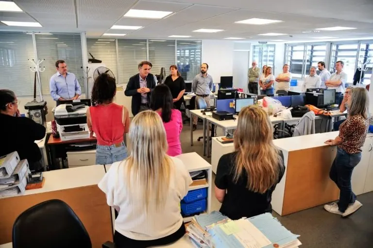

anunciante principal · creatividad a definir

Estatales bonaerenses: oficializan la recategorización del personal de la Autoridad del Agua
El Ejecutivo publicó un decreto para avanzar en la reubicación de categoría de los estatales bonaerenses que se desempeñen en el ADA.

Legisladores buscan reconocer post mortem a Ricardo Soulé, leyenda del rock nacional
Más noticias
Kicillof: “Necesitamos transformar de raíz el rumbo económico del país”
El gobernador bonaerense, Axel Kicillof, encabezó este viernes un Congreso Productivo en la Ciudad de Buenos Aires, en donde convocó a “transformar de raíz el rumbo económico”.

El Senado bonaerense postergó la sesión por los proyectos de salud de Kicillof
El Senado bonaerense recién tratará en noviembre los dos proyectos de salud enviados por Axel Kicillof y Nicolás Kreplak. Buscan llegar antes del Presupuesto.
Por amplia mayoría, la AJB aceptó el aumento del 6% que ofreció Kicillof
La Asociación Judicial Bonaerense (AJB) aceptó por amplia mayoría el aumento salarial del 6% que ofreció el Gobierno de Axel Kicillof.
Mar del Plata: Montenegro moderó la pelea con Kicillof y acordó medidas contra la inseguridad
El intendente Guillermo Montenegro modera sus críticas a Kicillof y acuerda con Provincia nuevos operativos contra la inseguridad en Mar del Plata.
Tras la cumbre del PJ, el peronismo busca una tregua interna para enfrentar a Milei
Kicillof, Massa y Máximo Kirchner acordaron defender las PASO y coordinar una agenda legislativa contra Milei, en medio de la interna del PJ.

Senador de La Plata rechazó el proyecto para cambiar el nombre del puerto: “No se discute”
El senador de Hechos - UCR Identidad, Marcelo Leguizamón, rechazó el proyecto que avanza en Diputados para cambiar el nombre del Puerto La Plata.
Frente a la crisis, Pulti y Larroque recibieron a más de 40 clubes en Mar del Plata
El concejal de Acción Marplatense/MDF, Gustavo Pulti, y el ministro Andrés Larroque se reunieron con representantes de más de 40 clubes de Mar del Plata.

Procuración General reunió a legisladores bonaerenses, tras los reclamos de la Corte
Los titulares de ambas cámaras de la Legislatura bonaerense se reunieron con el presidente de la Suprema Corte, Sergio Torres. Qué proyectos pide el máximo tribunal.
Provincia
Ver másKicillof encabeza un Congreso Productivo en CABA, en medio de la disputa con Macri
El gobernador bonaerense, Axel Kicillof, encabezará este viernes un Congreso Productivo con empresarios pymes y trabajadores en la Ciudad de Buenos Aires.
Nación
Ver másLa Justicia procesó a José Luis Espert por lavado de dinero y le prohibió la salida al país
La Justicia procesó este jueves al ex diputado nacional libertario, José Luis Espert, por lavado de dinero y le prohibió la salida al país. Los detalles.
Municipios
Ver másMontenegro apoyó el plan de Milei para reactivar Chapadmalal: “Es una nueva etapa”
El intendente de Mar del Plata, Guillermo Montenegro, respaldó el plan del Gobierno nacional para reactivar el complejo hotelero de Chapadmalal.
Opinión
Ver más
¿Si restringimos los celulares en escuelas, por qué no en cárceles?, por Juan Manuel Rico Zini
El senador del PRO, Juan Manuel Rico Zini, problematiza el uso de celulares en cárceles tras la aprobación de una ley para regular su uso en las escuelas.
Colegios Profesionales
Ver másNutricionistas destacan la prevención de la obesidad y el acceso a una alimentación saludable
El Colegio que nuclea a nutricionistas bonaerenses puso el foco en la prevención de la obesidad y el desarrollo de entornos saludables.
- Psicólogos bonaerenses celebraron su día con un mensaje sobre salud mental y derechos humanos
- El Colegio de Médicos bonaerense respaldó el reclamo salarial de los residentes de la provincia
- Los químicos bonaerenses le piden informes a 11 municipios por la presencia de arsénico en el agua
- Sociólogos bonaerenses se preparan para el cierre del congreso nacional con debates sobre trabajo, formación e IA